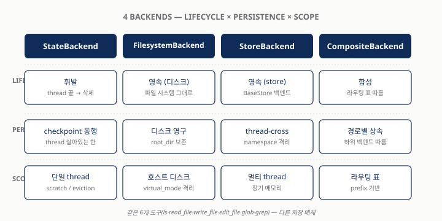
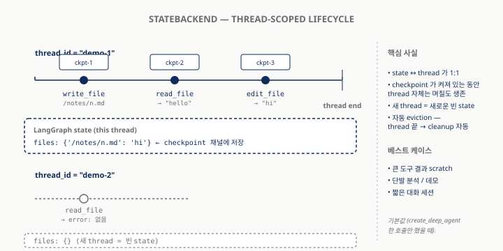
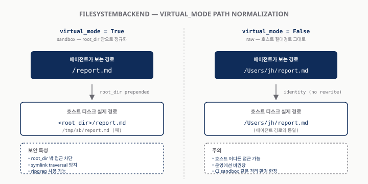
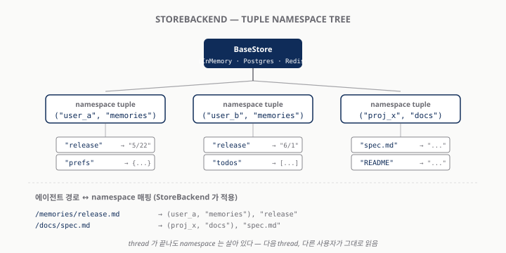
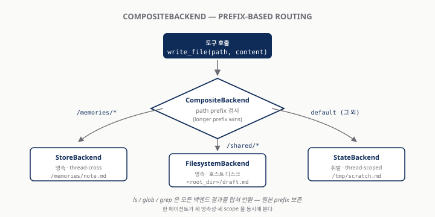

Deep Agents — Backends 심층
같은 에이전트 코드, 다른 저장 매체 — 한 줄 인자로 데모에서 운영까지
한 줄로 정리
백엔드 = 라우팅 가능한 가상 파일시스템 표면
- 도구는 6개로 고정 —
ls/read_file/write_file/edit_file/glob/grep - 그 아래는 가변 — State (휘발) · Filesystem (디스크) · Store (영속) · Composite (라우팅) · 사용자 정의 (S3/Postgres/Box…)
- 사용자 코드는 한 글자도 안 바뀐다 —
create_deep_agent(backend=…)한 인자만 교체 - dev → staging → prod 이동이 한 줄 — ephemeral 데모와 멀티 테넌트 운영이 같은 에이전트 코드를 공유
"도구는 그대로, 매체만 갈아 끼운다" — 본 발표 전체의 시작점이자 도착점.
1주차 데모의 한계
create_deep_agent() 한 호출의 깔끔함은 단일 thread + 휘발성 두 가정 위에 서 있다
- 노트북을 끄면 사라진다 — thread state 위에만 살아 있음
- 새 thread 면 다시 빈 책상 — 사용자 A·B 가 같은 에이전트를 쓰면 메모리가 섞임
- 권한 표현 불가 — "이 폴더는 못 읽음" / "쓰기 시 감사 로그" — state 안에 그런 자리 없음
- 외부 자료는 사각지대 — 이미 S3·Postgres 에 있는 사내 자료는
read_file로 닿지 않음
데모는 충분히 깔끔. 그 깔끔함을 자기 도메인에 옮기려는 순간 5개 요구가 한꺼번에 등장.
운영으로 옮길 때 부딪치는 다섯 요구
영속 · 멀티 테넌트 · 권한 · 외부 저장소 · 혼합 표면 — 단일 백엔드로 못 푼다
| 요구 | 무엇이 깨지는가 |
|---|---|
| 영속 | 어제 노트가 오늘도 있어야 — state 만으로는 안 됨 |
| 멀티 테넌트 | A·B 메모리 격리 — namespace 필요 |
| 권한·감사 | 경로별 deny / 쓰기 감사 — state 표현 없음 |
| 외부 저장소 | S3/Postgres/사내 시스템을 가상 FS 처럼 |
| 혼합 표면 | 휘발 + 영속 + 디스크를 한 에이전트가 |
다섯을 동시에 만족하려면 백엔드를 선택 가능한 한 켜 로 분리해야 함 — deepagents 의 답.
4종 한 장 비교
lifecycle × persistence × scope — 같은 인터페이스, 다른 저장 매체

| State | Filesystem | Store | Composite | |
|---|---|---|---|---|
| 생애 | 휘발 | 영속(디스크) | 영속(store) | 합성 |
| Scope | thread | 디스크 | 멀티 thread | 라우팅 |
| 케이스 | scratch | sandbox | 장기 메모리 | 혼합 |
Backend Protocol — 한 장으로
자기 백엔드를 만든다는 건 6개 메서드를 채운다는 뜻
class BackendProtocol(Protocol):
def ls(self, path: str) -> LsResult: ... # L342
def read(self, file_path, offset, limit) -> ... # L370
def write(self, file_path, content) -> ... # L509
def edit(self, file_path, old, new, replace_all): # L535
def glob(self, pattern, path) -> GlobResult: ... # L468
def grep(self, pattern, path, glob) -> ... # L400
- 도구 6개 ↔ 메서드 6개 — 1:1 대응
runtime_checkableProtocol — 상속 없어도 시그니처만 맞으면 동작- info-form 변종 (
ls_info/glob_info/grep_raw) — Composite 라우팅·메타데이터용
라인 번호는
archives/original_docs/deepagents_backends/protocol.py(852L) 기준.
StateBackend — thread-scoped 휘발
가장 단순한 백엔드. 같은 thread 안에서만 파일이 산다. 디폴트.

- 저장 위치 — LangGraph state 채널 (
files: {path: content}) - thread 끝 → 휘발 — 단 checkpointer 가 켜져 있으면 thread 자체는 며칠 생존
- 베스트 케이스 — 큰 도구 출력 scratch · 자동 eviction
Demo 1 — StateBackend
archives/scripts_py/01_state_backend.py (78L) — 같은 thread 잔존 / 다른 thread 부재
# L41-46
agent = create_deep_agent(
model=model,
system_prompt=system_prompt,
backend=(lambda rt: StateBackend(rt)),
checkpointer=InMemorySaver(),
)
- Turn 1 —
thread_id=demo-thread-1에서 노트 작성 - Turn 2 — 같은 thread 에서 read → 노트 있음
- Turn 3 —
thread_id=demo-thread-2로 변경 후 read → 노트 없음
factory 형태(lambda)로 전달하는 이유 —
StateBackend가 LangGraph runtime 핸들에 의존하기 때문.
FilesystemBackend — 디스크 + virtual_mode
호스트의 한 디렉토리를 sandbox 로. virtual_mode 한 플래그가 표면을 바꾼다.

virtual_mode=False |
virtual_mode=True |
|
|---|---|---|
| 보는 경로 | 호스트 절대경로 | sandbox 내 / 시작 |
| 격리·symlink | 약함 / 호스트 정책 | 강함 / 안전 resolution |
| 시연 | 디렉토리 일치 | sandbox 한눈에 |
운영 기본
virtual_mode=True— ripgrep + symlink traversal 방지 자동.
Demo 2 — FilesystemBackend
archives/scripts_py/02_filesystem_backend.py (81L) — 두 모드 디스크 결과 비교
# L43-49
def build_agent(root_dir: str, virtual_mode: bool):
return create_deep_agent(
model=model,
system_prompt=system_prompt,
backend=FilesystemBackend(root_dir=root_dir, virtual_mode=virtual_mode),
)
- virtual_mode=True +
write_file('/report.md')→ 호스트<tmp>/report.md - virtual_mode=False + 호스트 절대경로 그대로 → 그 위치에 그대로
- 호스트 디스크를 직접 들여다보며 두 결과 비교
같은 에이전트 코드, 모드 한 플래그 차이로 호스트 디스크 결과가 갈린다 — 결정권은 사용자에게.
StoreBackend — 영속 (thread-cross)
LangGraph BaseStore 위에 얹은 한 켜. thread 가 끝나도 같은 파일을 본다.

- BaseStore = namespace + key + value 3축 영속 (InMemory / Postgres / Redis)
- tuple namespace + 의미 기반 검색 (
index={"embed":..., "fields":[...]}) - LangSmith Deployment 시 자동 프로비저닝
checkpointer 는 thread 내, store 는 thread 간 — LangGraph 영속의 두 축.
Demo 3 — StoreBackend
archives/scripts_py/03_store_backend.py (79L) — 다른 thread 에서 같은 노트가 읽힌다
# L41-50
store = InMemoryStore()
checkpointer = InMemorySaver()
agent = create_deep_agent(
model=model,
system_prompt=system_prompt,
backend=(lambda rt: StoreBackend(rt)),
store=store,
checkpointer=checkpointer,
)
- session-A 에서
/memories/release.md작성 - session-B (다른 thread) 에서 같은 파일 read → 같은 내용
store=와backend=두 인자가 분리 — Composite 부분 공유 가능
운영 환경에선 InMemoryStore → PostgresStore 한 줄 교체로 진짜 영속.
CompositeBackend — 라우팅 규칙
한 에이전트, 세 매체 — 경로 prefix 가 결정한다

CompositeBackend(default=StateBackend(rt),
routes={"/memories/": StoreBackend(rt),
"/shared/": FilesystemBackend(root_dir=...)})
- longer prefix wins ·
ls/glob/grep결과 합쳐 반환 (prefix 보존) - 부분 마이그레이션 — 한 경로씩 점진 운영화
Demo 4 — CompositeBackend
archives/scripts_py/04_composite_backend.py (107L) — 3개 규칙 동시 운영
# L62-68
composite = lambda rt: CompositeBackend(
default=StateBackend(rt),
routes={
"/memories/": StoreBackend(rt),
"/shared/": FilesystemBackend(root_dir=root, virtual_mode=True),
},
)
/memories/note.md→ Store (영속)/shared/draft.md→ Filesystem (호스트 디스크)/tmp/scratch.md→ default=State (휘발)- L95-100 호스트 디스크 직접 확인 →
/shared/*만 떨어졌음
세 영속성·세 scope 이 한 가상 FS 안에 공존. 사용자 코드는 한 인자.
직접 만들기 — 왜?
빌트인 4종으로 안 풀리는 외부 저장소 — BackendProtocol 6개를 채우면 끝
- 이미 S3 에 자료 — 사내 위키·PDF·로그 →
read_file('/docs/wiki.md')로 닿게 - 이미 Postgres 에 자료 —
documents테이블을 가상 FS 로 노출 - 사내 SDK 시스템 — Box·Confluence·Notion 등을 한 인터페이스 뒤로
커뮤니티가 이미 시작:
DiTo97/deepagents-backends(S3+Postgres) ·box-community/deepagents-filesystem-example.
S3 스타일 — 6개 메서드만 채우기
원문 §"Use a virtual filesystem" L173-210 outline + DiTo97 production 패키지
class S3Backend(BackendProtocol):
def __init__(self, bucket, prefix=""):
self.bucket, self.prefix = bucket, prefix.rstrip("/")
def _key(self, path): # /foo/bar.md → <prefix>/foo/bar.md
return f"{self.prefix}{path}"
def ls_info(self, path): # 서버사이드 listing
def read(self, path, ...): # GetObject
def write(self, path, ...): # PutObject (create-only)
def edit(self, path, ...): # Read → replace → Write
def glob_info(self, ...): # key 목록에 glob
def grep_raw(self, ...): # 서버사이드 grep 또는 read+스캔
- 경로 ↔ 키 매핑 결정이 핵심
files_update=None— 외부 영속은 state 업데이트 안 함- production: boto3 client 캐싱·retry·pool·MinIO 호환은
DiTo97/deepagents-backends에서 fork
바닥부터 짤지, 패키지 fork 후 커스터마이즈할지 — 보통 후자가 훨씬 빠르다.
Policy hooks — 두 레이어
정책 거는 자리는 두 군데, 다른 일을 한다
| 백엔드 서브클래싱 | 미들웨어 | |
|---|---|---|
| 가로채는 시점 | 도구 → 백엔드 메서드 직전 | LLM 호출 / 도구 wrap |
| 알 수 있는 정보 | 경로·내용·작업 종류 | 메시지·도구 호출·결과 전체 |
| 잘 맞는 정책 | 경로별 deny, 쓰기 감사 | PII redaction, rate limit, HITL |
| 영향 범위 | 한 백엔드 한정 | 에이전트 전체 |
- 데이터 위치가 핵심 → 백엔드 레이어
- 내용·맥락이 핵심 → 미들웨어 레이어
- 합쳐 쓰면 가장 안전 (예: GuardedBackend + PIIMiddleware)
헷갈리지 말 것 — 어떻게 다룰지(미들웨어) vs 어디에 둘지(백엔드). 둘은 직교한다.
`GuardedBackend` — 한 클래스 패턴
FilesystemBackend 서브클래싱으로 경로별 권한·감사·redaction
class GuardedBackend(FilesystemBackend):
def __init__(self, *, deny_prefixes, **kwargs):
super().__init__(**kwargs)
self.deny_prefixes = [p if p.endswith("/") else p+"/" for p in deny_prefixes]
def write(self, file_path, content):
if any(file_path.startswith(p) for p in self.deny_prefixes):
return WriteResult(error=f"Writes not allowed under {file_path}")
return super().write(file_path, content)
# edit 도 같은 패턴
- 같은 패턴으로 가능 — 감사 로깅 / 읽기 redaction / 쓰기 우선순위
- 미들웨어 보완 —
PIIMiddleware·ModelCallLimitMiddleware·HumanInTheLoopMiddleware가 LangChain prebuilt 카탈로그에 16종 존재
정책을 한 줄에 — 어디에 거는지가 무엇 보다 먼저 결정된다.
선택 가이드 — 시나리오 → 백엔드
운영 요구사항 한 줄 → 추천 조합 한 줄
| 시나리오 | 추천 조합 |
|---|---|
| 로컬 데모 / 단일 thread | StateBackend (기본) |
| CI sandbox · 컨테이너 격리 | FilesystemBackend (virtual_mode=True) |
| 장기 메모리 (멀티 thread) | StoreBackend + InMemoryStore (dev) / Postgres (prod) |
| LangSmith Deployment | StoreBackend (자동 프로비저닝) |
| 스크래치 + 메모리 혼합 | Composite (default=State, /memories/→Store) |
| 사내 S3 자료 활용 | Composite + 커스텀 S3Backend |
| 감사·deny + PII 마스킹 | Composite + GuardedBackend + PIIMiddleware |
결정 흐름 4단: (1) 영속 필요? (2) 매체? (3) 여러 매체 한 에이전트? (4) 정책 필요?
다음 발제로의 다리
백엔드(2주차)는 어디에 살아남는지를, 다음은 누가 어떻게 만지는지를 다룬다
- 04-harness (3주차?) — sandbox / local_shell / langsmith 백엔드의 실행 모델
- 06-subagents (4주차?) — 격리된 워커별 자기만의 컨텍스트·파일시스템 뷰
- 셋이 합쳐 에이전트의 운영체제 표면
"백엔드는 파일이 어디 있는지. harness 는 언제 어떻게 만지는지. subagents 는 누가 만지는지."
Q&A
질문 / 운영 사례 공유 / 정책 디자인 토론
- 본 발표 자료:
deep-agents/week2-backend-jh-lee/ - 데모 실행:
python archives/scripts_py/0[1-4]_*.py(Ollama gemma4:31b 필요) - 원문:
archives/original_docs/05-backends.md - 보강자료:
archives/research/INDEX.md(5건)
끝까지 들어주신 분께 — 다음 주는 harness 또는 subagents 둘 중 사용자가 정하는 대로.
(백업) Backend Protocol — 풀 시그니처
시간이 남을 때만 — protocol.py 852L 핵심 메서드
| 메서드 | 시그니처 |
|---|---|
ls |
ls(path) -> LsResult |
read |
read(file_path, offset=0, limit=2000) -> ReadResult |
write |
write(file_path, content) -> WriteResult |
edit |
edit(file_path, old, new, replace_all=False) -> EditResult |
glob |
glob(pattern, path="/") -> GlobResult |
grep |
grep(pattern, path=None, glob=None) -> GrepResult |
ls_info / glob_info |
-> list[FileInfo] (Composite 메타 라우팅) |
grep_raw |
-> list[GrepMatch] | str |
info-form 셋 = Composite 가 메타데이터(path/size/modified_at) 합칠 때 사용.